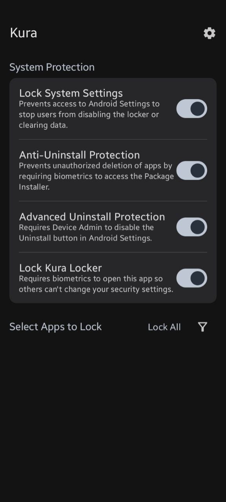

Secure Locking
Biometric and PIN-based protection for your sensitive applications.
Minimalist Design
Built with Material 3 to feel native to your modern Android device.
Privacy First
Completely open-source with zero trackers.
Smart Analysis
Kura dynamically categorizes your apps based on risk level:
Crucial
Recommended
Unrecommended
Instant Protection
Automatically re-locks apps the moment your screen turns off or after a custom timeout.
Intruder Alerts
Monitor failed access attempts to see if someone is trying to bypass your security.
Transparent & Open
Kura is, and always will be, Free and Open Source Software. You can audit every line of code on GitHub.